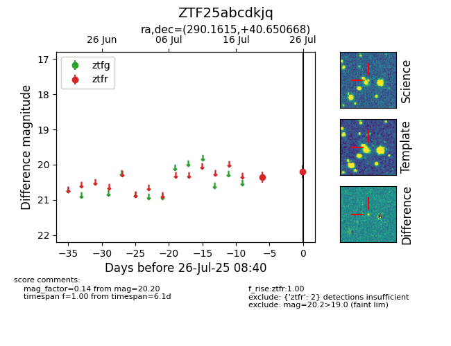

Target ZTF25abcdkjq at 2025-07-26 08:40, see:
FINK: fink-portal.org/ZTF25abcdkjq
Lasair: lasair-ztf.lsst.ac.uk/objects/ZTF25abcdkjq
ALeRCE: alerce.online/object/ZTF25abcdkjq
alt names
ZTF25abcdkjq (ztf,fink)
coordinates:
equatorial (ra, dec) = (290.1615,+40.65067)
galactic (l, b) = (72.5857,+12.19429)
photometry
last ztfr=20.20
2 ztfr detections
